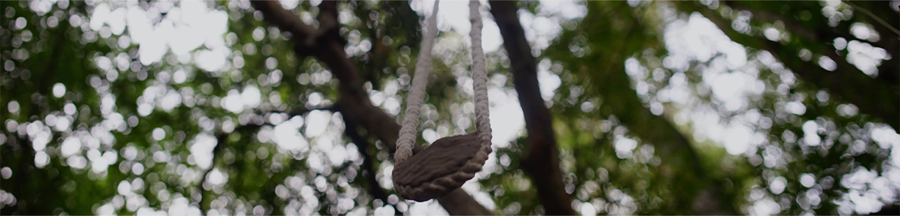

ARTISTAS
Bárbara Paz | Clara Strabucchi
Bárbara Paz Nace y vive en Brasilia, Brasil. Licenciada en Artes Visuales de la Universidad de Brasilia. En los últimos años se ha centrado en los tejidos, pasando a los lenguajes de la escultura, la pintura y principalmente las instalaciones. El acto cotidiano del caminar es parte inicial de sus investigaciones en donde el material se vuelve un agente protagonista para transmitir las experiencias y sensaciones. Tensa los límites del campo de investigación en el que puede hacer que el cuerpo interactúe con el trabajo, generando un diálogo entre las texturas y la memoria corporal.
Clara Strabucchi Nace en La Serena y vive en Santiago, Chile. Licenciada en Artes Visuales de la Universidad Católica de Santiago. Llegada a Buenos Aires, Argentina en marzo 2021 por la Residencia Epécuen que se vincula con Residencia Zona imaginaria.
“Observo la naturaleza y sus fenómenos, reconociendo sus causas y consecuencias para poder reproducirla. A través del ensayo y error elaboro sistemas de construcción con los materiales cambiando su composición, observo su transformación en un proceso de cambio constante. Investigo las formas de control de cada material estructurando y desafiando sus propias leyes. Temas como la fragilidad, la inestabilidad y la nostalgia aparecen en la observación de estos fenómenos como un reflejo de nuestra propia condición humana. En la naturaleza puedo tomar distancia y encontrar otro tiempo, el tiempo de la contemplación. Detenerse, observar y finalmente interpretar. Aceptar que todo se transforma y vivimos en un constante movimiento.” (Clara, 2021)